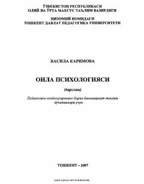

OPOila psixologiyasi fanining nazariyasi va amaliyoti haqidagi pedagogik darslik.
Mazkur darslik pedagogika oliy o'quv yurtlari talabalari uchun mo'ljallangan bo'lib, oila psixologiyasi fanining nazariy va amaliy asoslarini yoritib beradi. Unda oila va nikoh institutining tarixi, oilaviy munosabatlarning psixologik mexanizmlari hamda yoshlarni oilaviy hayotga tayyorlash masalalari atroflicha muhokama qilingan. Kitob bo'lajak o'qituvchilarga kasbiy mahoratini oshirish va yosh avlodni ma'naviy qadriyatlar ruhida tarbiyalashda ko'maklashadi.